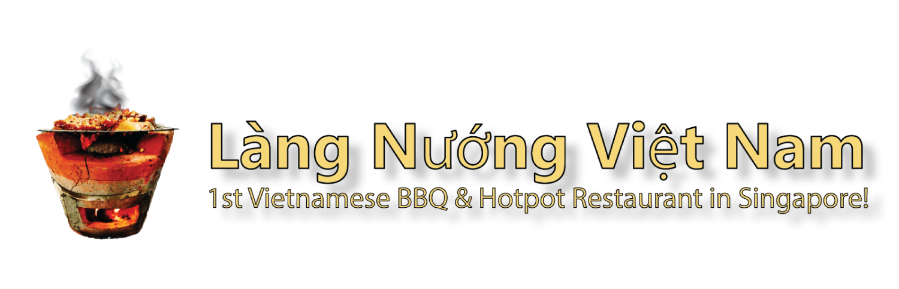
Singapore's Original Grill Village!Charcoal-grilled gourmet meats & seafood and refined Vietnamese dining at 271 Jalan Besar Road.
Honored as Singapore's first Vietnamese charcoal BBQ and hotpot restaurant, Lang Nuong Vietnam is a place to enjoy Saigon's street-style atmosphere and cuisines inspired by Vietnam's three regions.
We marinate fresh premium meats and seafood with natural herbs imported directly from Vietnam. Grilled over charcoal, they release the distinctive aroma of lemongrass and herbs. Our pho broth is simmered with beef bones and rare herbs for 48 hours, alongside a range of authentic Vietnamese dishes that can be hard to find elsewhere in Singapore.
Low tables and chairs, Vietnamese music and familiar popular songs bring the feel of street-style dining in Vietnam. Our vision is to share authentic Vietnamese food and culture with Vietnamese diners who miss home, and with Singaporeans who want to experience Vietnam without travelling there.
Customers will experience our Secret Vietnamese marinated gourmet Meat & Seafood, coupled with our special dipping sauces! Of course, we have done some tweaking and adjustments to the marination so as to cater to our local Singaporeans. Right now we have 2 main types of marination, one is for the meat and the other is for the seafood.
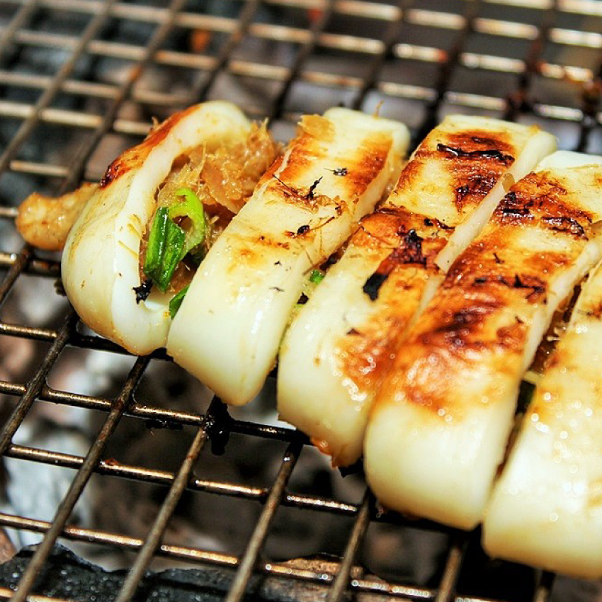
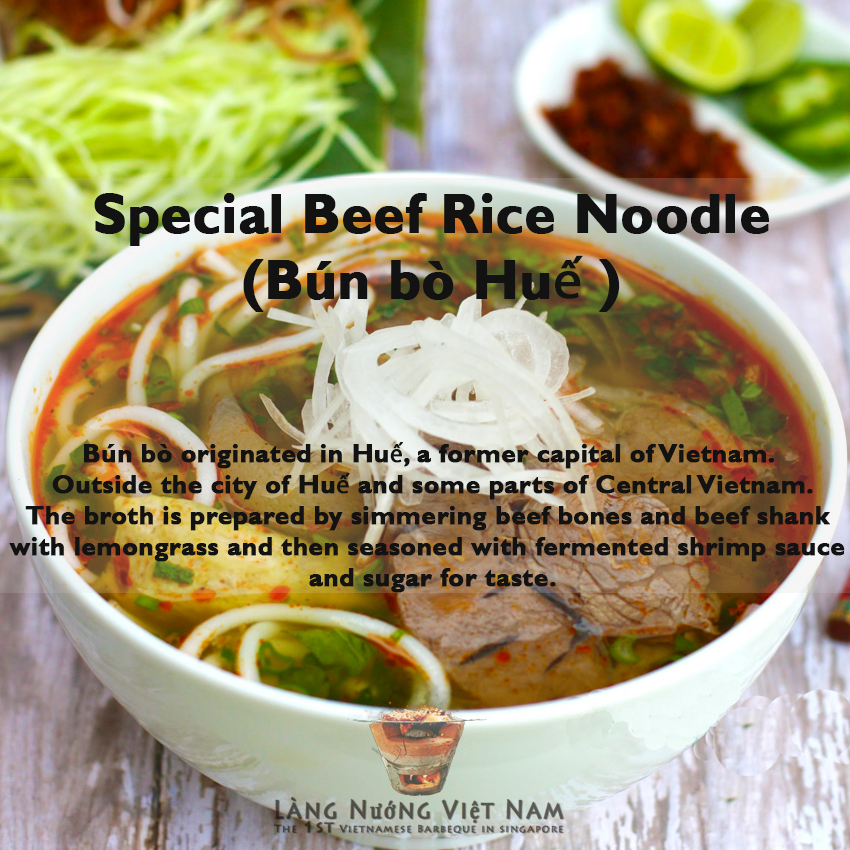
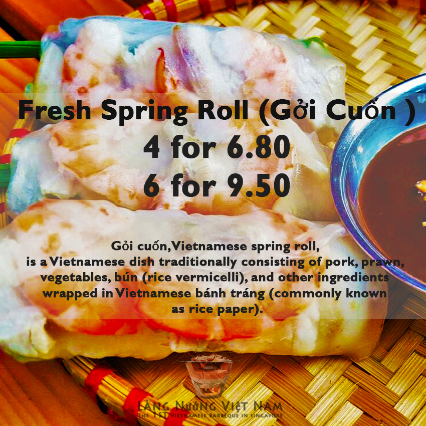
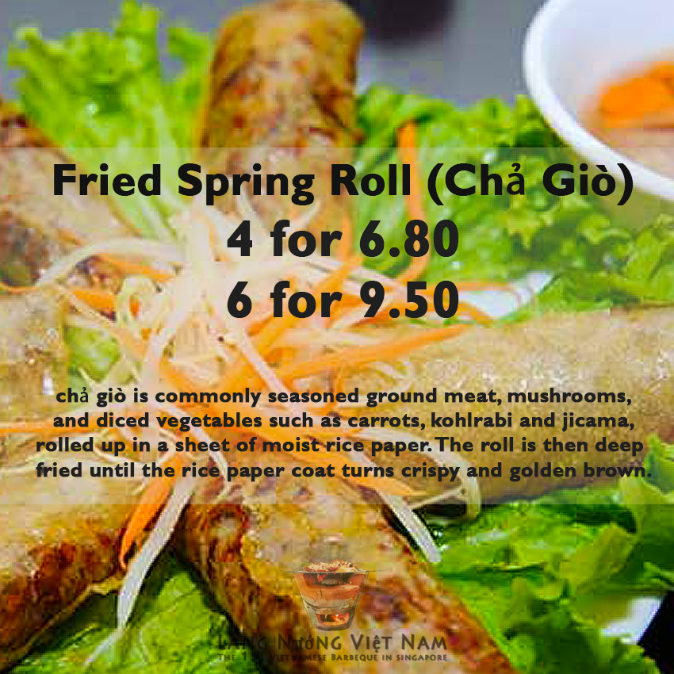
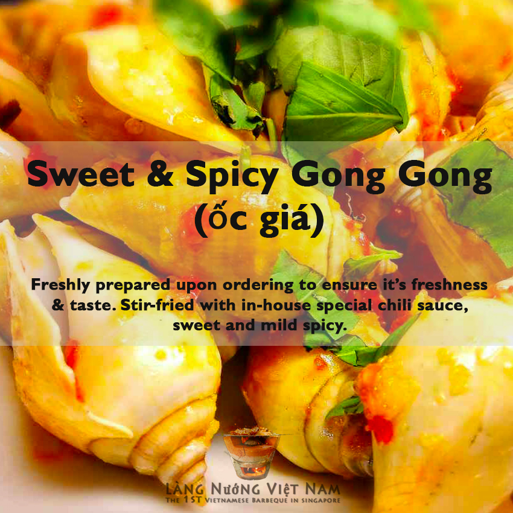
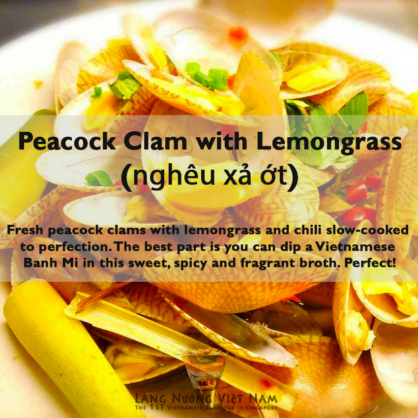
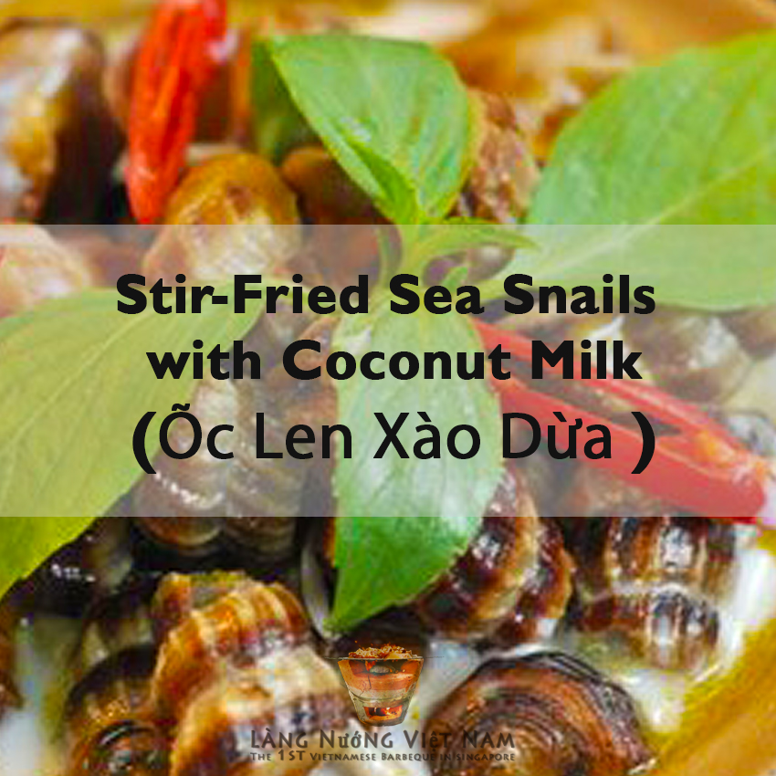
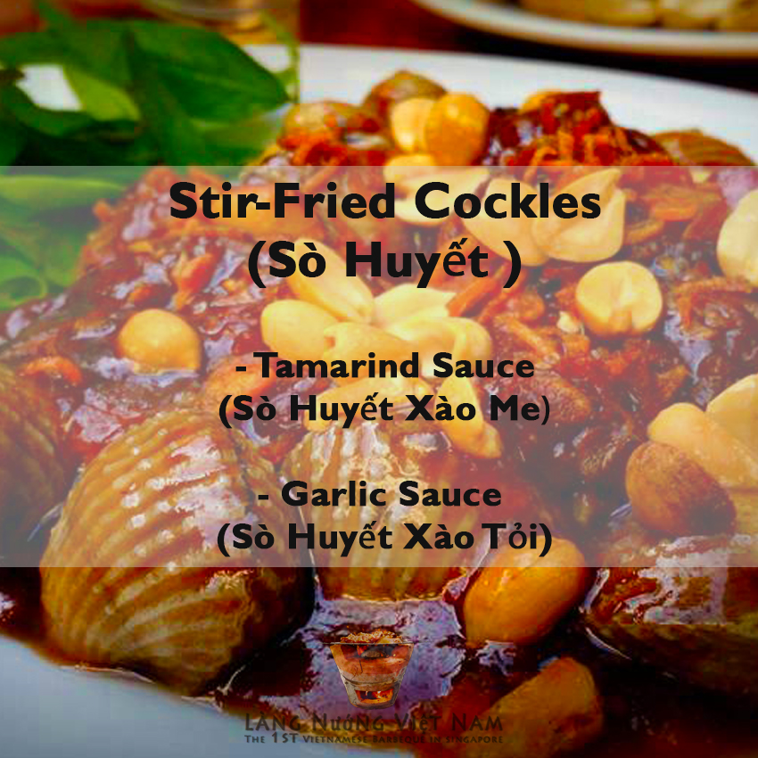
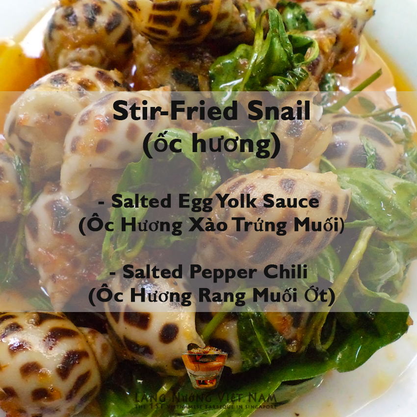
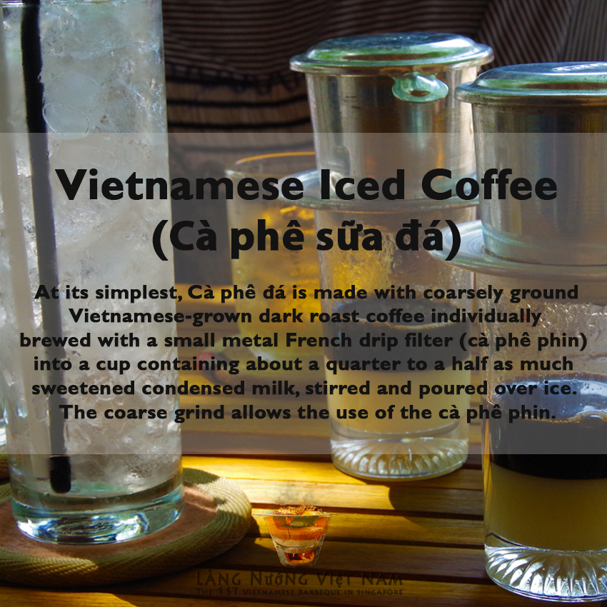
Singapore's first exclusive destination for authentic Vietnamese BBQ, hotpot and cuisine. Dining beyond expectation.
Building on a decade of experience with Vietnamese BBQ, hotpot and home-cooked cuisine, Lang Nuong Exclusive brings guests an elevated dining experience. Inspired by Zen nature, its design offers a distinctive, refined setting for a wider selection of Vietnamese dishes, including unique creations developed for this concept.
We remain committed to sharing Vietnamese cuisine and culture, and are grateful to our loyal customers as the restaurant continues to improve and evolve. We are delighted to host family and friends gatherings, birthdays, wedding ROM celebrations, private and company events, and visitors to Singapore.
Charcoal BBQ at the table with alfresco dining.
Private dining and VIP rooms.
Thank you so much 8 Days Magazine for featuring us!
Thank you Miss Tam Chiak (Maureen) for the wonderful review of our authentic Vietnamese BBQ.
Read Review →Thank you N.O.C for dining here! We're grateful to all our happy customers, friends & family.
Visit NOC →1st Authentic Vietnamese BBQ in Singapore!
271 Jalan Besar Road, Singapore 208941
Monday – Sunday (Daily)
3:00pm – 6:00am
Book online for parties of up to 20 guests, or call 9632 6039 for larger bookings.
Nearest MRT:
Nearest Bus Stop: